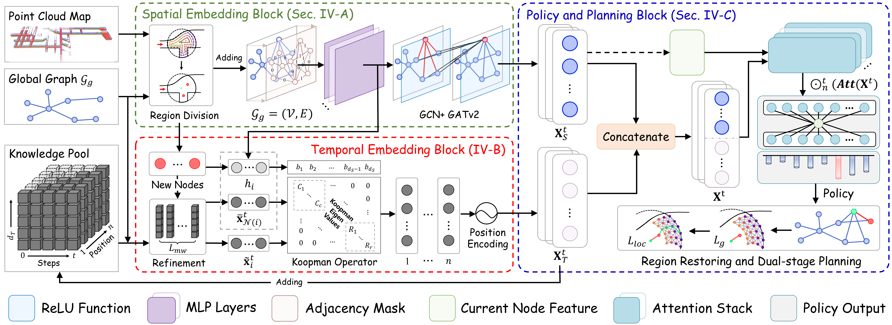
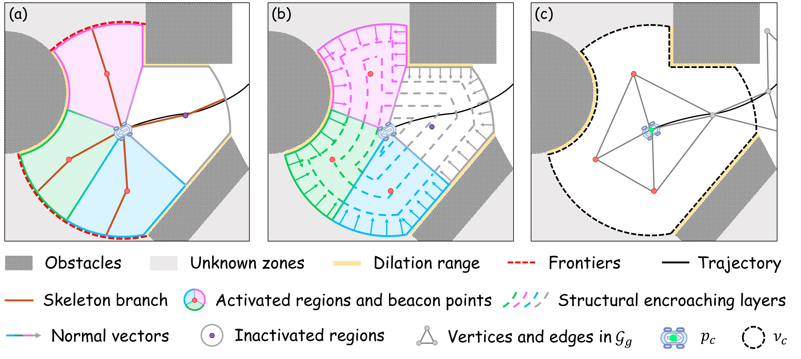

Method Overview

Fig. 1. Overview of the proposed SEKIRO framework with three individual blocks: Node Spatial Embedding Block, Node Temporal Embedding Block, and Policy and Planning Block.
SEKIRO is a structure-enhanced and Koopman-integrated deep reinforcement learning framework that
unifies spatial and temporal reasoning for non-myopic robot exploration.
It captures multi-scale region dependencies through a GNN-based spatial embedding block and
encodes exploration history into a linear latent space via a Koopman operator,
enabling efficient long-horizon planning.
SEKIRO consists of three main components:
(1) Spatial Embedding Block: A skeleton-driven region division constructs a sparse global graph Gg, and a structural encroaching strategy quantifies regional features into a comprehensive descriptor. A cascaded GNN (GCN + GATv2) captures multi-scale spatial dependencies across regions.
(2) Temporal Embedding Block: A Knowledge Pool stores historical information, and a Multi-EMA mechanism refines exploration knowledge. A quasi-diagonal formed Koopman operator encodes temporal evolution into a linear latent space, enabling efficient long-horizon reasoning.
(3) Policy and Planning Block: An attention mechanism fuses the robot's current state with both spatial and temporal embeddings for navigation point determination. A dual-stage planning scheme generates a high-precision local exploration path along encroaching layers and a global guidance path using ATSP on the global graph.

Fig. 2. Schematic of region division and structural encroaching. (a) Divided regions and beacon points based on skeleton. (b) Visibility contour and structural encroaching layers. (c) Expansion of global graph Gg.

Fig. 3. Schematic of dual-stage planning.